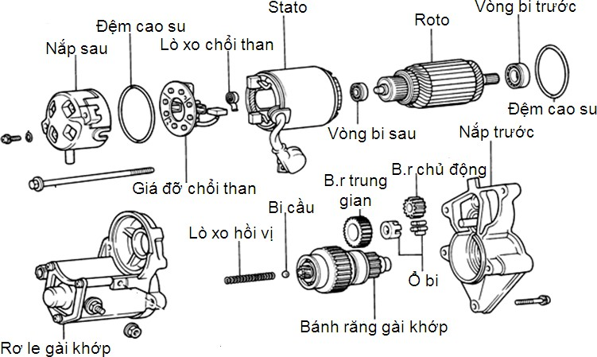
Hình 2.44: Cấu tạo máy khởi động giảm tốc của Toyota.
Tháo máy khởi động trên xe xuống
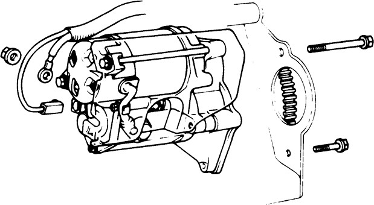
Tháo cáp âm ra khỏi ắc quy: Trước khi tháo cáp âm ra khỏi ắc quy, tắt các phụ tải trên xe, tắt chìa khoá điện.
Tháo cáp máy KĐ (tháo nắp bảo vệ, tháo đai ốc bắt cáp, tháo cáp điện.)
Tháo dây dẫn tháo máy khởi động
Vệ sinh công nghiệp
Sử dụng chổi chuyên dùng, xăngm máy nén khí làm sạch bên ngoài.
Tháo các bộ phân máy khởi động.
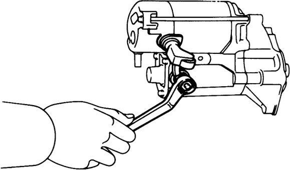
Dùng cle hay tròng 13 mm
Tháo đai ốc và phiến cách điện ra khỏi chân cấp điện cho động cơ điện một chiều (C)
Tháo ốc suốt liên kết. Dùng cle hay tròng 10 mm. Tháo hai ốc suốt.
Tách động cơ điện một ra khỏi rơ le gài khớp.
Tháo nắp trước
Sử dụng tô vít bốn cạnh.
Tháo nắp trước của máy khởi động
Tách nắp trước ra khỏi rơ le gài khớp máy khởi động.
Dùng que nam châm.
Lấy viên bi ra ngoài, cẩn thận không bị rơi viên bi.
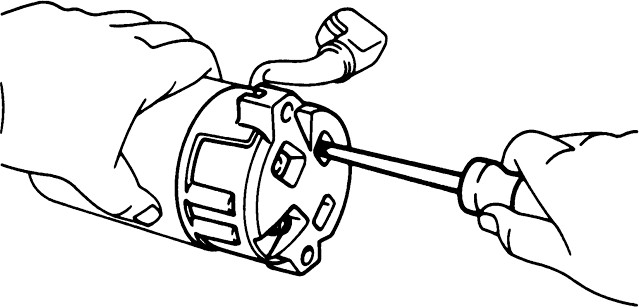
Tháo nắp sau.
Sử dụng tô vít bốn cạnh.
Tháo nắp đậy chổi than, cổ góp.
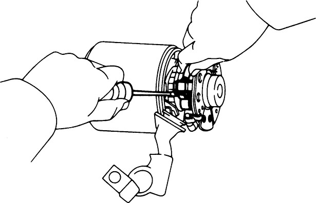
Tháo chổi than.
Tháo chổi than trong khi ép lò xo bằng tô vít đầu dẹt.
Vệ sinh công nghiệp.
Sử dụng chổi chuyên dùng, xăng, máy nén khí làm sạch các chi tiết vừa tháo của máy khởi động. Chú ý các chi tiết bằng cao su, nhựa như các vòng đệm không được vệ sinh bằng xăng dầu.
Các bước kiểm tra.
Kiểm tra sự nứt, vỡ, biến dạng, chờn các lỗ ren của các chi tiết.
Kiểm tra chạm mát giữa cổ góp và roto.
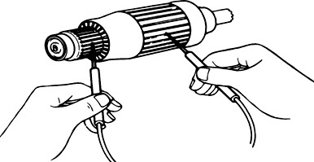
Dùng đồng hồ đo điện đặt thang đo điện trở, kiểm tra cách điện giữa cổ góp và thân, trục roto.
Chạm 1 đầu que đo vào thanh đồng cổ góp.
Chạm đầu que đo kia vào lõi sắt.
Nếu đồng hồ báo thông mạch thì roto bị chạm mát và cần phải thay.
Kiểm tra thông mạch giữa các thanh cổ góp.
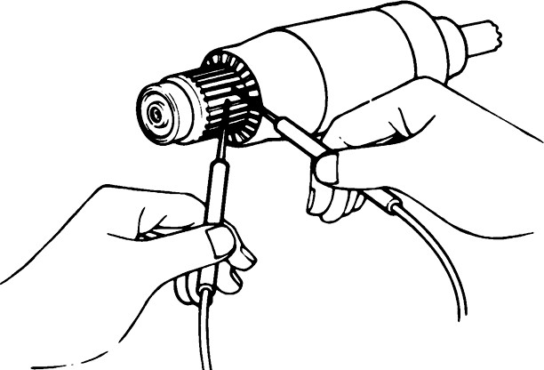
Dùng đồng hồ đo điện đặt thang đo điện trở, kiểm tra thông mạch giữa các thanh dẫn điện của cổ góp.
Chạm 2 đầu que đo vào 2 thanh đồng cổ góp.
Làm như bước 1 với tất cả các thanh đồng khác của cổ góp.
Nếu không có sự thông mạch giữa các thanh đồng thì thay roto.
Kiểm tra độ đảo hướng kính của cổ góp
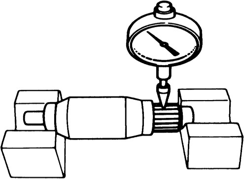
Dùng đồng hồ so, kiểm tra độ đảo của cổ góp,
Đặt rotor lên khối chữ V.
Dùng tay quay roto, đọc giá trị so kế. Tiêu chuẩn 0,2.
Cho phép 0,5.
Kiểm tra đường kính ngoài của cổ góp
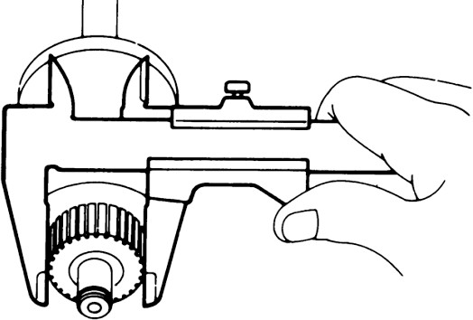
Dùng thước kẹp.
Đo đường kính ngoài của cổ góp.
Đường kính tiêu chuẩn là 30, giới hạn là 29mm Cổ góp mòn đi do nó tiếp xúc với chổi than và quay.
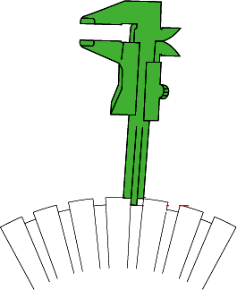
Nếu giá trị đo vượt quá giới hạn mòn tiêu chuẩn, tiếp xúc với chổi than sẽ giảm đi, thay thế roto.
Kiểm tra chiều sâu rãnh cổ góp
Tiêu chuẩn 0,5-0,8mm giới hạn 0,2mm Dùng thước đo độ sâu của thước kẹp.
Đo độ sâu của rãnh giữa các thanh dẫn điện.
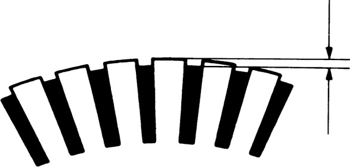
Nếu độ sâu nhỏ hơn giá trị tiêu chuẩn nhưng lớn hơn giới hạn thì cần rà lại cổ góp.
Nếu độ sâu nhỏ hơn giá trị giới hạn thì phải thay thế.
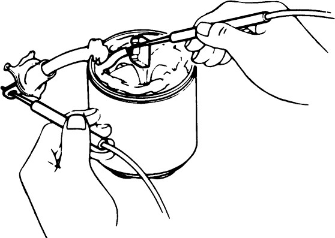
Kiểm tra thông mạch cuộn kích từ.
Dùng đồng hồ đo điện tiến hành đo thông mạch giữa chổi than và dây dẫn.
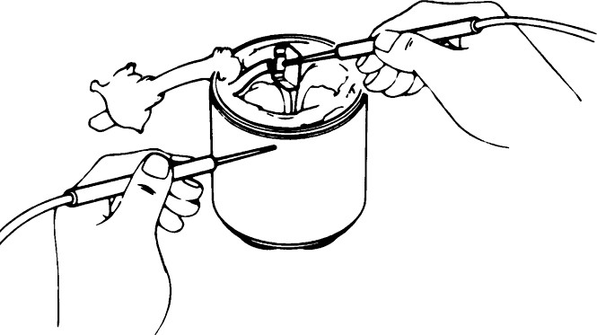
Kiểm tra điện trở cuộn kích từ.
Dùng đồng hồ đo điện đo điện trở của cuộn dây kích từ bằng cách đo từ chổi than đến vỏ máy khởi động.
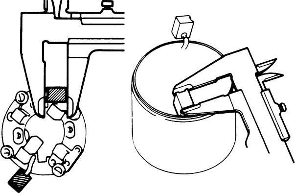
Kiểm tra chổi than.
Tiêu chuẩn 16mm giới hạn 11mm.
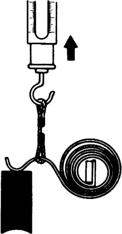
Tiêu chuẩn: 18-24N (1.79-2.41kg)
Kiểm tra cách điện giữa giá chổi than và vỏ máy.
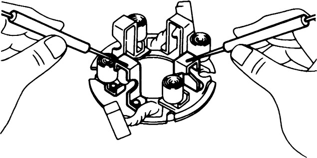
Kiểm tra cách đieenj giữa giá chổi than và vỏ máy
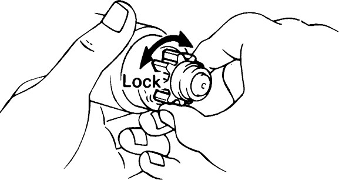
Kiểm tra khớp một chiều.
Quay khớp một chiều bằng tay và kiểm tra xem khớp một chiều có ở trạng thái hãm hay không.
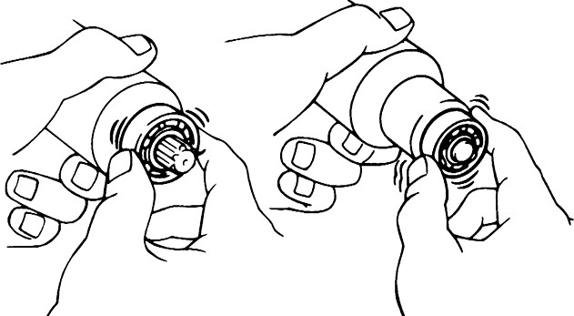
Quay khớp một chiều chuyển đổng nhẹ theo một chiều mà chiều ngược lại mà không được khớp một chiều còn tốt, ngược lại không tốt.
Kiểm tra vòng bi.
Kiểm tra vòng bi trước, sau.
Xoay ổ bi bằng tay và cảm nhận có tiếng ồn và chặt khít hay không.
Nếu vòng bi bị hư hỏng ta tiến hành thay thế.
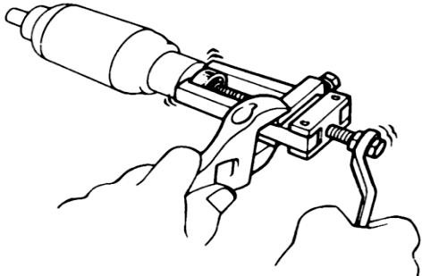
Tháo vòng bi.
Dùng vam chuyên dụng tháo vòng bi ra khỏi roto.
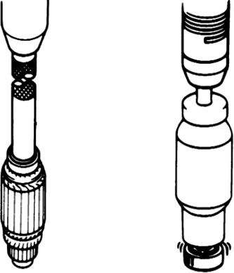
Lắp vòng bi.
Lắp vòng bi mới vào roto máy khởi động.
Kiểm tra cuộn hút.
Sử dụng một Ôm kế, söï thoâng maïch giữa các cực 50 và C.
Nếu không có thông mạch thì cuộn dây bị đứt.

Kiểm tra cuộn giữ.
Sử dụng một Ôm kế, kiểm tra xem có sự thoâng maïch giữa các cực 50 và vỏ.
Nếu không có thông mạch thì cuộn dây bị hỏng.
Khi kiểm tra nếu có sự nghi ngờ về rơ le gài khớp tiến hành tháo bảo dưỡng tiếp điểm của rơ le gài khớp.
Tháo nắp của rơ le gài khớp.
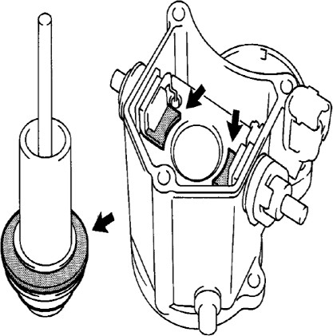
Tháo tiếp điểm.
Tháo tiếp điểm gồm đĩa đồng tiếp điểm nếu có bẩn cháy rỗ dùng giấy nhám đánh sạch.
Tháo các bộ phận tiếp điểm. Dùng cle hay tròng 13 mm.
Tháo các bộ phận tiếp điểm
Đưa các bộ phận tiếp điểm ra ngoài kiểm tra vệ sinh sạch sẽ sửa chữa thay thế nếu cần.
Lắp các bộ phận tiếp điểm.
Ép bằng tay một khối gỗ hình chữ nhật vào giữ mặt của 2 tiếp điểm để chúng không xoay rồi siết chặt ốc giữ bằng tuýp.